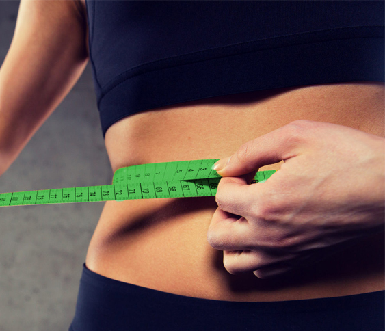

Почему важно знать
индекс массы тела
человека?
Индекс массы тела (ИМТ) — важный критерий, в некоторой степени отражающий состояние здоровья человека и уровень его физической подготовленности. Несложные расчеты позволяют определить, страдает ли человек от анорексии, предожирения или ожирения, или его вес находится в пределах нормы. Медицинский термин давно перешел в повседневную жизнь, активно используется людьми, следящими за здоровьем, фигурой.

Калькулятор
ИМТ